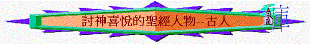

引言：
「人非有信，就不能得 神的喜悅；因為到 神面前來的人必須信有 神，且信他賞賜那尋求他的人。」來11:6
～來11:6提到人非有信就不能得神喜悅，似乎是總結之前所提及兩位古人—亞伯及以諾，他們也有信，所以得神喜悅
一.亞伯
「古人在這信上得了美好的證據。我們因著信，就知道諸世界是藉 神話造成的；這樣，所看見的，並不是從顯然之物造出來的。亞伯因著信，獻祭與 神，比該隱所獻的更美，因此便得了稱義的見證，就是 神指他禮物作的見證。他雖然死了，卻因這信，仍舊說話。」來11:2-4
「有一日，那人和他妻子夏娃同房，夏娃就懷孕，生了該隱（就是得的意思），便說：「耶和華使我得了一個男子。」又生了該隱的兄弟亞伯。亞伯是牧羊的；該隱是種地的。有一日，該隱拿地裏的出產為供物獻給耶和華；亞伯也將他羊群中頭生的和羊的脂油獻上。耶和華看中了亞伯和他的供物，只是看不中該隱和他的供物。該隱就大大地發怒，變了臉色。耶和華對該隱說：「你為甚麼發怒呢？你為甚麼變了臉色呢？你若行得好，豈不蒙悅納？你若行得不好，罪就伏在門前。它必戀慕你，你卻要制伏它。」創4:1-7
1.得神喜悅的原因
A.他的信心
a.他信有神
～亞伯為何獻祭，他一定是相信有神，從父母口中得知諸世界是藉神的話而造的，他因信世上有一位神創造諸世界，所以他願獻禮物給神
b.他信如此奉獻不是徒然
～亞伯是牧羊的，但那時人不吃肉的，為什麼牧羊呢？最大的原因是為獻祭，他是將羊群中頭生的和羊的脂油獻上，他要殺了那羊，他所作的主要不是為他生活，而是他信如此奉獻是值得的，是不徒然的。給神而工作。
c.他信此奉獻的方式是神悅納的
～他信如此奉獻是神喜悅的，結果神悅納看中了他的禮物，被認定他為義
B.他的行為
「你若行得好，豈不蒙悅納？你若行得不好，罪就伏在門前。它必戀慕你，你卻要制伏它。」創4:7
～創4:7中強調該隱行得好也必蒙悅納，也間接表示亞伯平時的行為行得好，而此行為同無罪有關，他的行為沒罪惡
2.蒙神悅納的人也遭災禍
「該隱與他兄弟亞伯說話；二人正在田間。該隱起來打他兄弟亞伯，把他殺了。」創4:8
「使創世以來所流眾先知血的罪都要問在這世代的人身上，就是從亞伯的血起，直到被殺在壇和殿中間撒迦利亞的血為止。我實在告訴你們，這都要問在這世代的人身上。」路11:50-51
～得神悅納的人不代表沒有災禍，亞伯至終被人殺去，但他雖然死了，神仍肯定他的義行，給後世人也知道，神也必會為他顯公義，咒詛殺他的人
二.以諾
「雅列生以諾之後，又活了八百年，並且生兒養女。」創5:19
「亞當的七世孫以諾，曾預言這些人說：「看哪，主帶著他的千萬聖者降臨，要在眾人身上行審判，證實那一切不敬虔的人所妄行一切不敬虔的事，又證實不敬虔之罪人所說頂撞他的剛愎話。」」猶v.14-15
～以諾的名字有「獻身」的意思，他是亞當七世孫，會說預言，即他也是先知，得了神的默示
1.得神喜悅的原因
「 以諾活到六十五歲，生了瑪土撒拉。 以諾生瑪土撒拉之後，與 神同行三百年，並且生兒養女。以諾共活了三百六十五歲。以諾與 神同行， 神將他取去，他就不在世了。」創5:21-24
「以諾因著信，被接去，不至於見死，人也找不著他，因為 神已經把他接去了；只是他被接去以先，已經得了 神喜悅他的明證。」來11:5
A.信心的看見
～瑪土撒拉有衝擊意思"man of the dart,"，他信瑪土撒拉出現會帶來神審判世代的衝擊！
～他也是一個先知，得了啟示，信主會帶著千萬聖者降臨
B.轉變的決定
～他六十五歲時就與神同行
C.與神的同行
～若當時世代是不敬虔的世代，以諾與神同行就代表他不與不敬虔的人同行不義的路，他也與世人一樣，要生兒養女，但他不行不義的路，卻與神同行光明之道
D.持久的行動
～他與神同行三百年
2.得神悅納的結果
「他們若想念所離開的家鄉，還有可以回去的機會。」來11:15
～神喜悅他，就將他接去，而接去的意思是不經歷死亡，而被改變移到天上那裏去